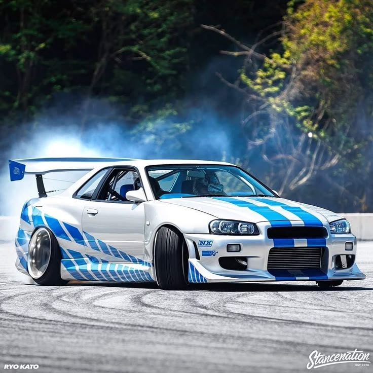
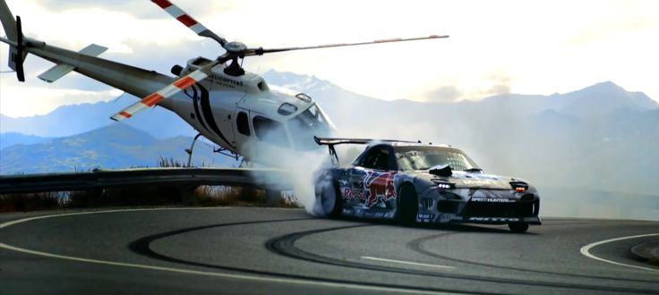
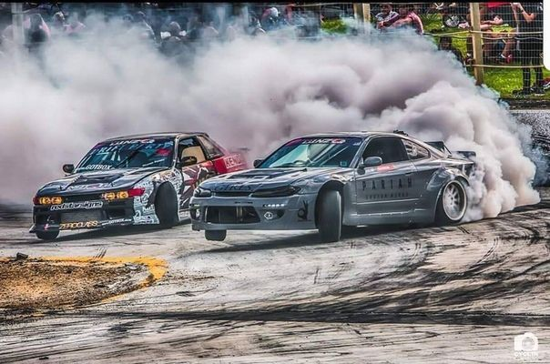
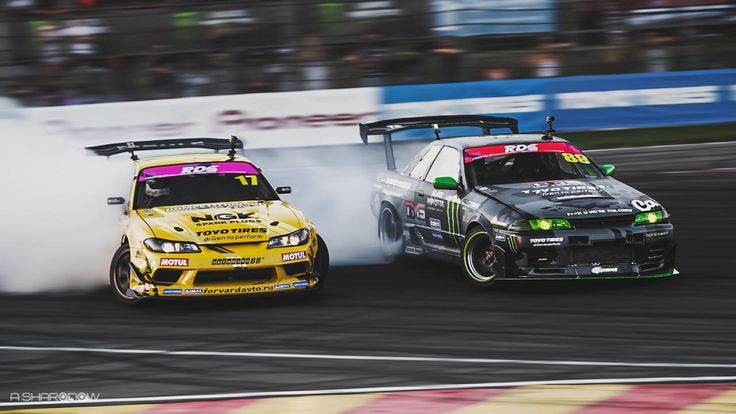
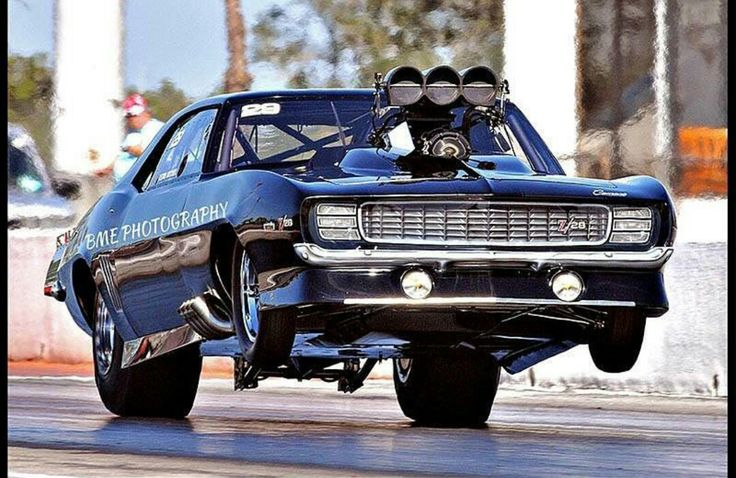
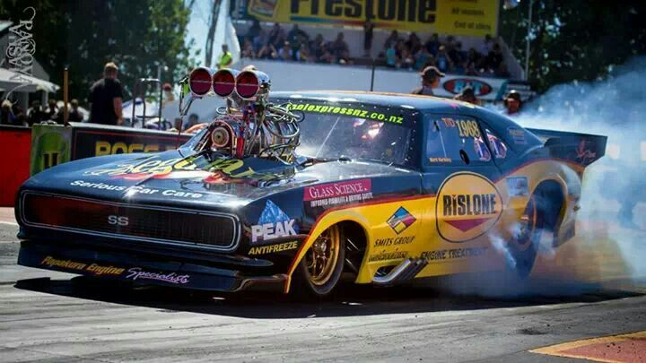
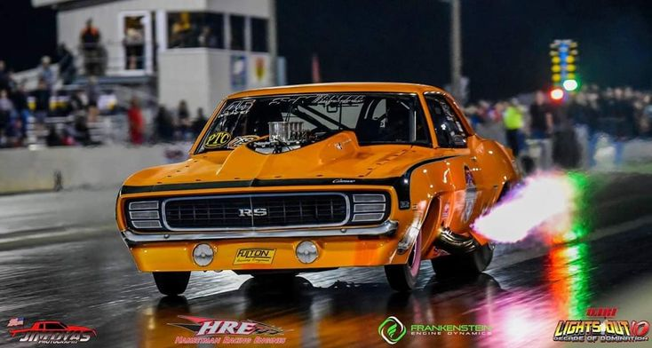

Carros de drift são veículos preparados especificamente para uma técnica de pilotagem onde o motorista faz o carro deslizar de lado nas curvas de forma intencional e controlada. A ideia é perder a tr ação nas rodas traseiras acelerando fundo, mas usar a direção e os freios para manter o controle total do veículo enquanto ele "dança" na pista.




Os carros de arrancada (drag racing) são máquinas construídas com um único e exclusivo propósito: acelerar do ponto A ao ponto B em linha reta no menor tempo possível. Geralmente, as provas acontecem em pistas de 201 metros (1/8 de milha) ou 402 metros (1/4 de milha). Aqui, a dança e o controle dão lugar à tração extrema e à força bruta na largada.

